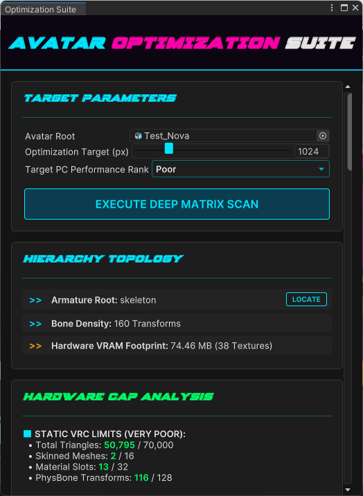
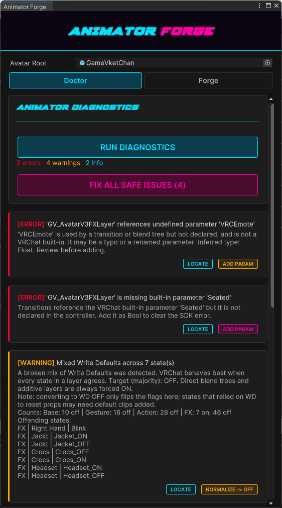
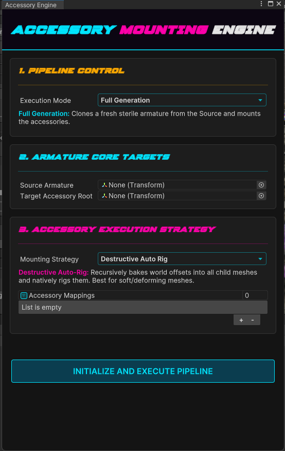
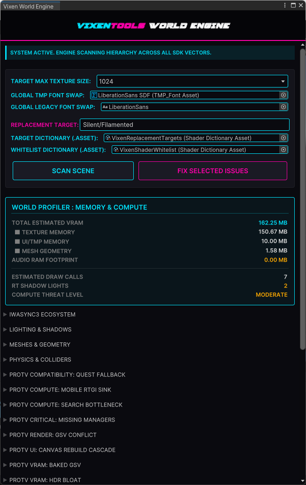

Everything In The Toolbox
Built on Unity's modern UI Toolkit. A suite of Editor tools focused strictly on getting avatars and worlds ready to ship. Click any interface below to expand the preview.
Which tools you see depends on your project. The Hub, Animation Workbench Pro and the Pipeline Preset Manager load everywhere. Avatar projects get the Optimization Suite, Quest Conversion Engine, PhysBone Blueprints, Animator Forge, Badge Studio, the Material Conflict Finder and the Accessory Mounting Engine. World projects get the World Engine, World Profiler and the Scene Placement tools. Everything except the Workbench and the Preset Manager needs the VRChat SDK.
Vixen Hub
One window inside the Unity Editor for your tools, your docs and your changelogs. Seven tabs in an avatar project, eight in a world, where the Metrics Engine breakdown joins them.

What it does
-
Update notice in the Scene view:
A SceneView-injected cyber badge appears automatically whenever the package version changes.
The notifier reads
package.json, compares stored versions, and spawns a neon update badge that routes directly to the Changelog tab. - Dynamic DOM Bridges: Every tab - News, Overview, Core Modules, Supported Modules, Metrics Engine, Network, Support and Changelogs - is built using live UIElements containers. Switching modes dynamically rebuilds the DOM without freezing the Editor or triggering layout thrashing.
-
Native Markdown Engine:
The Hub parses
README.mdandCHANGELOG.mddirectly from the package. Headings, lists, separators, and inline formatting are converted into UIToolkit elements with cyber-styled typography and animated separators. - Action Delegates: Every module card in the Hub is backed by a direct C# delegate. Clicking a button runs the matching Unity menu command straight away - no reflection hacks, no string-based routing, no fragile editor scripts.
- Core Module Launchpad: One-click access to the tools your project can actually run. Animation Workbench Pro and the Pipeline Preset Manager always appear. Avatar projects add Badge Studio, the Quest Conversion Engine, the Optimization Suite, PhysBone Blueprints, Animator Forge, the Material Conflict Finder and the Accessory Mounting Engine. World projects add the World Engine and live toggles for the Scene Placement tools, which show their on/off state right on the card.
-
SDK & Package Version Sync:
Reads the version straight out of your installed SDK package, checking
com.vrchat.avatars, thenworlds, thenbase, and shows it in the header banner next to the toolbox version. It reports the SDK you actually have, not the minimum the toolbox was built against. -
Changelog Markdown Parser:
Parses all version blocks from
CHANGELOG.mdand exposes them through a dropdown selector. Each version renders its markdown content into a scrollable cyber-styled panel. - Network Routing Panel: Direct links to GitHub, Discord, X/Twitter, YouTube and the Issue Tracker. All links are rendered as cyber-cards with animated hover states.
- Support Buttons and Links: A dedicated tab for supporting the developer, complete with Ko-Fi, Gumroad, Patreon, CashApp, and storefront links - all rendered from the same markdown.
- Zero-Latency UI: The Hub uses flex-driven UIToolkit layouts and async-safe initialization, with parsed changelog versions held in memory, so tab switching stays instant even in large Unity projects.
Under the hood
One window for your tools, your docs and your changelogs, built on Unity's newer UI so it stays responsive while the Editor is busy.
- Update notice in the Scene view - When the package version changes, a small badge appears in the Scene view rather than a popup that interrupts you. Click it and the Hub opens on the changelog.
- Links inside the docs work - Markdown links in any document the Hub shows become real buttons. Some open a web page, others run a tool for you, so a doc can walk you into the thing it is describing.
In practice
- Where to find it -
Vixens Toolbox > Hub Dashboard. - Always current - The Hub reads the installed version and the changelog straight from the package, so what you see is what you have. Nothing to refresh and nothing to sync.
Avatar Optimization Suite
Crushes avatar complexity while leaving the parts that matter alone, with the texture pass running across every core your machine has.

What it does
- Precision QEM Decimation: Quadric Error Metric edge collapse (Garland-Heckbert), the same class of algorithm as Blender's Decimate. Drives each heavy mesh toward your triangle target while preventing face flips, preserving UV and normal seams, material boundaries and open borders. UVs, colors and bone weights are interpolated across every collapse. It halts early rather than shredding protected geometry.
- Dual-Shielding: Material slots whose names read as delicate (eye, visor, lens, blush, face, mouth, teeth, pupil, iris) are locked out of the decimation grid, and on a Humanoid rig the vertices weighted to the left and right Hand bones are locked too. Fingers and faces keep their detail while the rest of the mesh comes down.
- Blendshape Memory Engine: Captures every delta frame (verts, normals, tangents) before the collapse, then re-projects them onto the optimized mesh using a master translation map. Guarantees 1:1 expression fidelity after the mesh is reduced.
- Bone Collapse & Weight Transfer: Finds bones at the end of a chain that nothing is using, and moves their vertex weights up to the parent. Reduces rig complexity without compromising animation integrity or physics behavior.
- Tight-Fit Bounds Rebuilder: Fits each renderer's culling bounds to its real posed geometry in root-bone space, so meshes driven by many bones or a scaled armature measure their true size rather than the authored mesh box. Adds a small margin for animation range and turns Update When Offscreen off, since VRChat culls on the static bounds anyway.
- Empty object cleanup: Detects and removes empty GameObjects with zero components and no vertex influence, flattening bloated hierarchies and reducing serialization overhead.
- Disabled component cleanup: Automatically removes hard-disabled Behaviours (excluding Animator) to reduce build size and eliminate dead logic paths.
- Format Before Resolution: Textures left on Uncompressed are caught first and offered high-quality block compression, at the top of the task list. That is a 4x VRAM cut at 8 bits per pixel instead of 32, the same saving as halving the resolution but without the blur, and Unity picks the right block format per texture so normal maps stay normal maps. A second pass moves transparent textures off the older DXT5 block format onto BC7 at identical memory, killing gradient banding for free, and skips opaque ones because those would cost memory rather than save it. Resolution is the blunt instrument.
- Texture size reduction: When you do need to resize, ImageMagick handles unique textures - including those hidden inside VRCFury dependencies - while skipping RenderTextures to avoid corruption. Downscale to claw back VRAM, or upscale when you need to go the other way. Every texture is listed largest first with its own checkbox, so the run only touches what you tick. Deterministic, offline, no cloud dependency.
- Physics Node Depth Sorter: Maps all PhysBones, Colliders, Contacts, and Constraints, then sorts them by hierarchy depth. Lets you safely remove leaf-node physics without upsetting the core rig.
- PC and Quest checks: Performs full SDK-level compliance checks, including illegal component detection, shader whitelist enforcement, joint removal, camera removal, and warnings tied to the Performance Rank you are aiming for.
Under the hood
Brings a heavy PC avatar down to a Performance Rank you pick, without wrecking the face or losing your expressions. It works on a copy, and every step is a single undo.
- Welding, not blind decimation - On meshes over 15,000 polygons it fuses vertices that sit in the same place. It matches on position and UV, so texture seams stay intact instead of tearing open the way a plain position weld does.
- The face is protected automatically - Material slots named for eyes, visors or the face are left alone, and so is anything weighted to the neck bone. You get the polygon saving in the body and keep the detail where people actually look.
- Expressions survive - Welding a mesh normally throws away its blendshapes. The suite saves all of them first, then rebuilds each one across the fused vertices, so visemes and facial expressions still work after a heavy reduction.
- No more disappearing avatar - It recalculates mesh bounds from the root bone, which fixes the bug where an optimised avatar vanishes at certain camera angles.
In practice
- Pick a rank, not a number - Choose Excellent, Good, Medium or Poor and the limits for animators, contacts and PhysBones all move to match. No guessing at thresholds.
- You choose what physics goes - Rather than removing physics behind your back, it lists every component by depth in the hierarchy and lets you tick what to drop. Take the tail fluff and hair tips, keep the structural bones.
- Finds textures you would miss - It follows animator controllers and VRCFury toggles to reach textures that are not on the avatar directly, so the VRAM figure covers what actually loads in game rather than only what is visible in the Inspector.
Quest Conversion Engine
A non-destructive conversion that turns a PC avatar into one that meets VRChat Mobile–compliant builds.

What it does
- Magick.NET Linear Downsampling: Resizes textures in linear light using ImageMagick, outside Unity. Supports 256–2048px targets, preserves micro-contrast, and automatically skips RenderTextures to avoid corruption. Every texture is processed deterministically for perfect VRAM control.
-
Deep Material Spider:
Traverses
SerializedObjectstreams, Animator controllers, VRCFury components, nested prefabs, and hidden dependency chains to extract every material and texture used by the avatar. Guarantees 100% accurate VRAM mapping - even for assets buried inside outfit toggles or animation clips. - Removes what mobile rejects: Components mobile will not accept - Cameras, Lights, Cloth, Rigidbodies and Joints - are flagged and locked with neon-red, non-overrideable toggles, so they cannot slip into the build. Particle Systems, Trail and Line Renderers are handled separately: they are capped by your chosen performance rank and stay yours to override.
- Interactive Component List: Provides a full UI Toolkit panel for reviewing and overriding Quest limits. PhysBones, Colliders, Contacts, Constraints, Animators, and Particle Systems are sorted by hierarchy depth and capped according to your selected performance rank (Excellent → Poor).
- Face Tracking & VRCFT Hunter-Killer: Detects VRCFaceTracking templates, adjerry91 prefabs, VRCFury face-tracking branches, and namespace-based FT components. Automatically locks them for removal to maintain Quest compliance.
-
Non-Destructive Prefab Isolation:
Clones the avatar into a dedicated Quest workspace under
Assets/VixenTools/QuestConversion, ensuring your PC avatar remains untouched while the mobile clone undergoes full transformation. - Hard-Cap Performance Mapping: Calculates total triangles, skinned meshes, material slots, unique materials, unique textures, and all physics nodes. Highlights violations using color-coded severity markers and applies VRChat’s mobile limits mathematically.
- Texture Map Selection: Displays every detected texture with resolution metadata and toggleable processing flags. Supports “Select All / Deselect All” batch operations for rapid iteration.
- Animator & Physics Isolation: Maps every Animator, PhysBone, Collider, Contact, Constraint, and Raycast into a structured component tree. Each entry shows its path, its depth, and a keep or remove toggle.
-
Mobile Shader Targeting:
Automatically converts materials to your selected Quest shader:
VRCMobileToonStandard,VRCMobileToonLit,VRCMobileStandard,VRCMobileMatcap, or Unity’s Mobile Standard. - Performance Rank Enforcement: Applies dynamic caps based on your chosen rank: Excellent, Good, Medium, Poor. These caps govern allowed PhysBones, Contacts, Animators, Particles, and more.
Under the hood
Turns a PC avatar into a Quest one in a sandbox copy. Your original prefab is never touched, so you can run it, look at the result, and run it again with different choices.
- Textures shrink without going soft - Resizing is done in linear light so highlights do not crush, then a light sharpen pass puts back the fine detail that Android's ASTC compression usually eats. It is the difference between a Quest avatar that reads as low-res and one that just reads as smaller.
- Finds every kind of PhysBone - It matches on the base type rather than a name list, so VRCFury conversions and older migrated components are all found. Components Quest bans outright, like cameras and audio sources, come out too.
- Respects your ignore lists - If you have told a PhysBone to ignore certain transforms, it reads that and removes the dead leaf bones underneath, which a name-based sweep would leave behind.
- Reaches materials hidden in VRCFury - Materials buried in toggles, blend trees and state behaviours get found and remapped to Android-safe copies. This is what stops the pink-shader surprise after upload.
- Face tracking is caught and flagged - PC face tracking will not run on Android, so it is detected three ways (prefab, hierarchy name and component type) and put on a locked removal list you can see but cannot switch off by accident.
- You choose the mobile shader - Pick from the VRChat mobile shaders or Unity's, and it makes the small corrections that restore the look: emission maps reset, multiply blending on particle lenses, additive on visors.
In practice
- Triage in bulk - Keep All and Remove All let you sweep a long component list quickly, then go back and rescue the handful that matter.
- The triangle cap has a bypass - When the only thing making you Very Poor is the hard 20,000 triangle limit rather than a real problem, you can build anyway for a showcase or a test.
- Your locomotion is safe - The avatar's root animator is found and locked, so removing components can never take out your locomotion, FX layers or toggle logic.
PhysBone Blueprints
Physics preservation and avatar iteration: snapshot a whole PhysBone setup, then rebuild it later.

What it does
-
Master Blueprint System:
Generates a complete physics blueprint using
AnimationUtility.CalculateTransformPath. Every PhysBone is serialized into a ScriptableObject containing:- Exact skeletal path
- Full Preset snapshot via
new Preset(pb) - Automatic preset asset creation per bone
-
One-Click Injection:
Rebuilds your entire physics blueprint on a blank avatar.
The engine:
- Finds each bone by stored path
- Creates missing PhysBone components
- Applies the original preset with
preset.ApplyTo() - Logs missing bones with graceful fallback
-
Preset Serialization Engine:
Every PhysBone is exported as a standalone
.presetfile. This allows:- Manual editing in Unity’s Preset Inspector
- Version control diffing
- Cross-avatar reuse
- Bulk preset replacement
-
Safe Extraction:
The mapper walks the avatar hierarchy using Unity’s transform path system, ensuring:
- No reliance on object names alone
- No prefab-breaking references
- Perfect compatibility with nested rigs
-
Graceful Degradation:
If the VRChat SDK is missing, the tool automatically switches to a safe fallback UI:
- Disables extraction/injection buttons
- Displays a warning panel
- Prevents broken editor states
-
Cyberpunk UI Toolkit Interface:
Styled with neon-accented USS files and custom fonts, the mapper provides:
- Two-phase workflow panels
- Live object fields
- Preset directory auto-generation
- Clear success/failure logs
-
Perfect for Multi-Variant Avatars:
Ideal for creators who maintain:
- Quest + PC variants
- Seasonal outfits
- Body-type swaps
- LOD-based rigs
Under the hood
Saves your whole PhysBone setup as a reusable file, so a rig you tuned once can be put back on any version of the avatar in one click.
- Saved by bone path, not by reference - Each PhysBone is stored against its position in the skeleton rather than a direct link, so a blueprint still applies after the avatar has been rebuilt, re-imported or optimised.
- Two steps, both repeatable - Save Blueprint walks the source avatar and writes the file. Apply Blueprint walks the target and puts the components back, adding any that are missing.
- Safe without the VRChat SDK - In a project with no SDK the window still opens, with anything destructive switched off and labelled, so nothing can be run by mistake.
In practice
- Making one - Select your master avatar root and hit Save Blueprint. It catalogues every physics component and writes the file under your project's Blueprints folder.
- Putting physics back - After a Quest conversion or a heavy optimisation has removed the components, select that avatar and hit Apply. Dozens of individually tuned PhysBones come back across the whole rig at once.
Animator Forge
A two-in-one avatar animator tool: diagnose broken controllers and forge fully-rigged toggles in a single click.

What it does
-
Animator Doctor:
Scans every playable-layer controller plus the Expression Parameters and Menu, then lists ranked findings with one-click fixes:
- Missing parameters, including VRChat built-ins like
Seated,AFK, and the Gesture values, re-added with the correct type - Broken mixes of Write Defaults across states
- Menu controls and toggles bound to parameters missing from the Expression Parameters
- Synced-parameter cost overflow, duplicate or mismatched parameters
- Dead zero-weight layers and invalid transitions
- Missing parameters, including VRChat built-ins like
- Write Defaults Normalizer: Detection and repair follow the widely-used VRCFury model, grouping states as normal, Direct blend tree, or additive, taking the target from the FX layer's majority, and always forcing Direct blend trees and additive layers on. It reports the exact offending states and only changes anything on request.
- Empty-Clip Repair: Catches the SDK's "Write Defaults disabled where the animation clip is either missing or empty" warning using VRChat's own scan logic, then fixes it by assigning a shared inert clip that carries a single harmless property.
-
Rig Builder:
Builds complete, ready-to-use rigs with no manual wiring, generating the Expression parameter, the menu control or submenu, the FX layer with its states and transitions, and the animation clips:
- GameObject toggle (one or many objects at once)
- Blendshape toggle and blendshape slider (radial dial)
- Material swap
- Exclusive group (a radio set where enabling one option disables the rest)
- Non-Destructive by Design: Reuses or creates the FX controller and expression assets, clones read-only sample controllers before touching them, and never deletes existing layers or parameters.
Under the hood
A two-sided avatar animator tool. The Doctor scans every playable-layer controller plus the Expression Parameters and Menu and reports ranked findings with one-click fixes. The Forge builds complete, fully-wired rigs (parameter, menu control, FX layer, states, transitions and clips) from a single form. Both halves are non-destructive by construction.
-
Ranked Finding Model: Every diagnostic is emitted as a finding carrying a
Severity(Error,Warning,Info), a title, a detail string, a context object, anIsSafeflag, and an optionalFixdelegate. The UI renders aLOCATEbutton per finding that drivesEditorGUIUtility.PingObjectonto the offending asset, plus aFIX ALL SAFE ISSUESbatch that runs only the findings whereIsSafe && Fix != null, leaving every judgement call to the creator. -
Driver-Parameter Recognition: Controllers that reference parameters which were
never declared are the single most common source of SDK panel spam on a purchased base. The Doctor
separates the two cases: parameters VRChat itself provides at runtime (
Seated,AFK,VRMode,GestureLeft/GestureRightand the rest of the driver set) are re-added to the controller with the correct type, while genuinely undefined parameters are reported rather than invented. - Write Defaults Normalizer: Detection follows the widely-used VRCFury model. States are grouped as normal, Direct blend tree, or additive; the target value is taken from the FX layer's majority (falling back to the avatar-wide majority on smaller rigs); and normalization always forces Direct blend trees and additive layers on, because those break otherwise. The exact offending states are named in the report and nothing is written until asked.
-
Empty-Clip Repair: Reproduces VRChat's own scan for the
"Write Defaults disabled where the animation clip is either missing or empty" warning.
MotionHasEmptyIssuewalks blend trees recursively, so a Direct tree with one empty child is caught as readily as a bare null motion. The fix assigns a shared inert clip fromAssets/VixenTools/AnimatorForge/_Empty.animcarrying a single constantm_IsActivecurve, which is what actually clears the warning: a genuinely empty clip still reads as empty to the SDK. -
Expression Asset Auditing: Cross-checks the Expression Parameters and Menu against
the controllers. It catches duplicate parameter names, type mismatches between a controller and the
expression asset, synced cost overflow against
VRCExpressionParameters.MAX_PARAMETER_COST, menus exceedingVRCExpressionsMenu.MAX_CONTROLS, SubMenu controls with a null target menu, controls with no parameter at all, and controls bound to parameters that were never declared. -
Layer & Transition Hygiene: Flags duplicate layer names, layers with no states,
layers with no default state, layers sitting at weight 0, transition conditions using a comparison
mode invalid for the parameter's type (for example
Greateron a Bool), and instant zero-duration transitions. -
Five Rig Types:
GameObjectToggle(one or many objects at once),BlendshapeToggle,BlendshapeSlider(a radial-puppet dial),MaterialSwap, andExclusiveGroup, a radio set where enabling one option drives the rest off. Each build generates the Expression parameter, the menu control or submenu, the FX layer with its states and transitions, and the animation clips. - Convention Matching: New states are created to match the avatar's own Write Defaults convention rather than a hardcoded default, so a forged toggle does not become the one odd state that desyncs an otherwise consistent controller.
-
Non-Destructive Asset Handling: Reuses an existing FX controller and expression
assets or creates them when absent, clones read-only sample controllers before touching them, and
never deletes existing layers or parameters. Generated assets land in
Assets/VixenTools/AnimatorForge/<AvatarName>via a step-throughIsValidFolder → CreateFolderchain.
In practice
-
Triage On A New Base: A freshly purchased avatar is dropped into the Doctor tab and
scanned. The typical first result is a cluster of missing driver parameters on the Sit and Action
layers plus a mixed Write Defaults report.
FIX ALL SAFE ISSUESclears the unambiguous parameter findings in one pass; the Write Defaults normalization is reviewed and applied separately because it changes animation behavior. - Clearing The SDK Panel: Where the SDK complains about Write-Defaults-off states with missing or empty clips, the empty-clip fix assigns the shared inert clip across every offending state, and the warning clears on the next build check.
- Forging A Toggle: On the Forge tab the creator names the rig, picks GameObject toggle, drags in one or several objects, and builds. The parameter, the menu entry, the FX layer, both states and both clips are generated together and matched to the avatar's existing Write Defaults convention, so the toggle works on the first upload without hand-wiring the Animator.
- Exclusive Outfit Sets: For a set of mutually exclusive outfit pieces the Exclusive group type generates an Int parameter with one state per option, so selecting one drives every sibling off. This is deliberately an Int plus toggles rather than a radial, because landing exactly on option three with a thumbstick is miserable.
Accessory Mounting Engine
Clones a clean armature from your avatar's rig, then mounts accessories onto it. For horns, tails, jewellery, props and anything else that has to move with the body.

What it does
- Two ways to mount: Full Generation clones a fresh clean armature from the source rig and mounts onto it, preserving local position, rotation and scale at every node. Append To Existing skips the clone and maps straight onto an armature you already generated, so a second and third accessory land on the same rig.
- Destructive Auto-Rig: Bakes each child mesh's world offset and rigs it natively to the cloned bones, blendshape deltas included. This is the one to use for soft and deforming meshes that need to bend with the body.
- Kinematic Constraint: Zeroes the hierarchy and drops a Parent Constraint on the root instead. Better for rigid props, particle systems and audio sources, which gain nothing from skinning.
- Stays visible on screen: PhysBone-safe root locking, generous bounds so mounted parts do not vanish at the edge of frame, GUID-suffixed asset names so nothing overwrites anything, and the whole run collapses into a single undo step.
Under the hood
Mounts props and outfit pieces onto a clean copy of your armature, so convention badges, seasonal props and rigid attachments stop being a manual rigging job. The whole run is one undo.
- Two ways to mount - Full Generation builds a fresh clean armature from your source rig. Append To Existing reuses one you generated earlier and just adds the new piece, so later accessories do not mean rebuilding what is already mounted.
- Soft pieces are baked to follow the rig - Cloth and anything that deforms gets baked onto the target skeleton, and every blendshape is carried through the same transform, so a piece that had shapekeys still has them afterwards.
- Rigid pieces are constrained instead - Props, particles and audio sources skip the bake and get a locked constraint that holds exactly the placement you set them at. Cheaper and it survives edits better.
- PhysBones on the accessory keep working - The accessory root is parented and constrained rather than zeroed out, because zeroing it breaks the anchor and inertia that its PhysBones depend on.
- It will not vanish at the edge of the screen - Baked accessories get generous bounds, which stops Unity hiding them when the avatar's own bounds do not cover where the mesh ended up.
- Nothing overwrites anything - Baked meshes are saved with unique names, and the folders they need are created on the way in, so a fresh install works the same as an established project.
In practice
- The first mount - Drop in your source armature, the destination object, and a list of accessories with the bone each one belongs on. One click clones the rig, bakes the pieces and parents the result.
- Adding more later - Switch to Append To Existing and the mappings you made against the original rig still resolve, so a new badge goes on without disturbing what is already there.
- Mixing the two - The method is chosen per run, so the same target can carry baked cloth from one pass and a constrained rigid badge from another.
Vixen Badge Studio
A high-fidelity, CSS-driven badge builder for VRChat creators, convention staff, and avatar artists.
What it does
-
Clean emission masks:
Generates clean
_EMImasks through ImageMagick. Your name and title plates are composited onto the tier's emissive map, then the result is flattened onto solid black and its alpha channel dropped, so nothing outside the lit text glows. Umbra tiers are desaturated first, as that convention expects. - Universal Shader Targeting: Auto-detects the active material and injects badge parameters into: Poiyomi Toon, lilToon, VRChat Mobile, Furality shaders, legacy convention shaders, and Standard. The engine dynamically maps diffuse/emissive slots, matcap channels, and custom mask fields.
- Ecosystem-Aware Template Routing: Supports both Vixens Toolbox and Furality SDK ecosystems. Automatically loads JSON layout bounds, assigns tier-specific templates, and scaffolds directory structures for new conventions.
- Advanced Layout Bounds Editor: Full UI Toolkit panel for editing text placement, rotation, and bounding boxes. Includes live override saving, JSON compatibility flags, and backwards-compatible layout migration for older template formats.
- Procedural Template Authoring: Generates 4K base templates programmatically or ingests existing diffuse/emissive maps. Automatically writes layout.json, shader defaults, and directory scaffolding.
- High-Fidelity Text Rendering: Uses Unity’s dynamic font rasterizer with your cyberpunk font to produce crisp, bloom-safe text at any resolution - including 4096×4096 convention-grade badges.
-
Material Auto-Apply:
Optionally pushes generated textures directly into your avatar’s material, filling
_MainTex(or_BaseMap) and_EmissionMapon whichever shader it detects.
Under the hood
Builds convention badges from a layout file instead of by hand in Photoshop, with Furality templates supported out of the box.
- Emission that does not bloom out - Badge text is rendered on black and flattened before it becomes the emission map, so the lit parts glow cleanly instead of bleeding into everything around them.
- It writes into whichever shader you use - Poiyomi, lilToon and the VRC mobile shaders are all recognised, and your chosen base and emission colours are written into the right slots for that shader.
- Place text by clicking the badge - The UV mapper lets you click the badge in the Scene view and takes the position from where you clicked, so you do not have to work out coordinates.
In practice
- Layouts generate themselves - Point it at the Furality SDK and Generate Layouts finds the badge parts and writes the bounds your text has to sit inside.
- Swapping shaders keeps your work - Move a badge from Standard to Furality Aqua and the generated textures are placed into the new shader's slots for you.
- Nudging text without leaving Unity - Turn on Scene Mapping, click the new spot, adjust width and height, rebuild. No image editor in the loop.
Live Scene UV Mapper
Click a point on your mesh in the Scene view and it reads the UV there. For placing names, pronouns and titles on curved or irregular badge surfaces.

What it does
- Interactive Raycasting: Converts Scene View clicks into precise MeshCollider hit points, then mathematically inverts the barycentric UV coordinates into ImageMagick pixel space. Supports 1K–4K badge maps with sub-pixel accuracy.
- Live Coordinates: Displays real-time pixel X/Y values in a neon-coded dashboard. Includes one-click clipboard copying for rapid layout iteration.
- Non-Destructive Workflow: Temporarily injects a MeshCollider into your badge object for raycasting, suspends Unity’s native gizmos, and restores everything on exit. No permanent components are added to your scene.
- Scene-Aware Mapping Mode: Locks the Scene View into a mapping state, intercepting clicks and preventing accidental transform edits while mapping is active.
- High-Resolution UV Projection: Supports custom texture resolutions (512 → 4096) and automatically clamps out-of-bounds UVs to prevent invalid pixel writes.
- Perfect for Curved Badges: Ideal for Furality-style curved badge meshes, 3D-printed badge models, or any non-flat surface where 2D layout tools fail.
Animation Workbench Pro
A curve editor for avatar animation. Shape the curves, bind material properties, and watch the result update live, all in one window.

What it does
- Explicit Intent Paradigm: Every destructive action - binding injection, curve overwrite, staged commit - is gated behind explicit user intent. The Workbench never mutates live scene data unless you deliberately authorize it, preventing accidental corruption of production assets.
-
Material Property Discovery Engine:
Powered by
MaterialPropertySearchPopup, the Workbench scans all renderers on your preview target, enumerates shader properties (Float, Range, Color, Vector), categorizes them (Emission, Rim, AudioLink, Masking, etc.), and exposes them as animatable bindings. Includes:- Automatic grouping into Emission, Rim, Dissolve, Color, Outline, AudioLink, SDF, Masking and Shading
- Color channel splitting (R/G/B/A)
- Vector channel splitting (X/Y/Z/W)
- Searchable popup with material → category → property hierarchy
-
Runtime Math Library:
Integrates the optimized
EasingFunctions.cssuite, enabling:- Linear
- SmoothStep
- EaseInOutCubic
- EaseInQuad / EaseOutQuad
- EaseOutCubic
EasingDropdownselector. -
CurveGraphView Rendering:
A custom IMGUI-driven graph renderer with:
- Zoomable time domain
- Pan-based navigation
- Double-click keyframe insertion
- Right-click keyframe deletion
- Color-coded curves per binding
- Dynamic value-range detection
-
Timeline Ribbon:
A dedicated time-range controller that defines:
- Visible window in the graph
- Key generation range
- Clip-length-aware bounds
-
Staged Curve Editing:
All curve operations are staged in memory before being committed to the clip.
This includes:
- Intermediate key generation
- Easing-based interpolation
- Tail-dropping and region rebuilding
- Non-destructive previewing
CurveOperations.BuildStretchedCurve(). -
Real-Time Preview:
The
PreviewEngineplays your staged animation directly on a scene object usingAnimationMode.SampleAnimationClip. Features:- Speed control
- Start-time offsets
- Automatic stop at clip end
- SceneView repaint synchronization
- Component Property Picker: Sitting beside the material picker, this reaches anything else Unity can key on your avatar: a component's enabled toggle, Transform values, or a field on one of your scripts. Set your Preview Target, hit Choose, pick the property, then Add Binding.
-
Binding:
A full inspector for all animation bindings in the clip:
- Select / deselect / delete bindings
- Bulk refresh
- Material and component property injection
- Path-aware binding creation
- Material swap tracks, listed and readable alongside the rest
-
Cyberpunk UI Toolkit Interface:
The entire Workbench is wrapped in a neon-accented, flex-responsive UI:
- Three-column adaptive layout
- Collapsible panels
- Custom USS styling
- High-contrast graph container
Under the hood
An advanced visual workspace for staging, easing, and sampling complex animation curves, built to bypass Unity's clunky default Animation window completely. The Workbench treats curves, bindings, and material properties as a programmable instead of a fragile hand-drawn timeline.
-
Runtime Math Library & Easing: Mathematical keyframe generation driven by
EasingFunctions.cs.CurveOperations.BuildStretchedCurverebuilds a curve between[sTime, eTime], preserving keys before the region while injecting intermediate keys using selectable easing (Linear, SmoothStep, EaseInOutCubic, etc.). Keys after the region are intentionally dropped, letting the generated segment define the tail. -
CurveGraphView Engine: A custom
VisualElementgraph powered byIMGUIContainer. Supports zooming, panning, double-click key insertion, and right-click key deletion with per-binding color hashing. It computes dynamic value ranges and renders both continuous curves and discrete key markers. -
Live Preview Engine:
PreviewEnginehooks intoAnimationMode.StartAnimationMode()andEditorApplication.updateto sample clips directly on a target GameObject. It plays back at adjustable speed, stops automatically at clip end, and never dirties the scene hierarchy. - TimelineRibbon Range Control: A dedicated IMGUI ribbon that exposes start/end sliders for the active clip. It prevents zero-length collapse, supports expanding beyond clip length, and broadcasts range changes back into the graph and generation logic.
- Multidimensional Material Extraction: The Workbench walks all renderers on a preview target, inspects shader properties, and explodes Color/Vector fields into per-channel float tracks (R/G/B/A, X/Y/Z/W). This prevents native API crashes and makes even locked Poiyomi properties fully animatable.
- Property search: A dedicated search window that groups properties by Material → Category → Property. It supports fuzzy search, nested foldouts, and click-to-bind behavior, returning a structured entry back to the Workbench.
-
EasingDropdown Selector: A lightweight UI Toolkit control backed by
GenericMenu. It renders textual previews of easing shapes and broadcasts changes viaOnValueChanged, allowing global default easing to be applied across all selected bindings.
In practice
-
Hidden Property Discovery: The property picker reads straight from a shader's active parameters. For example, it allows a creator to easily
locate an obscure third-party property like
_LumaFlowSpeedand extract its exact resting value (e.g.,0.00121). -
Mathematical Smoothing: Rather than manually dragging bezier curves, a creator
inputs the exact start and end values, selects a mathematical easing profile (e.g.,
SmoothStep), and defines key density. Generating 40 keys over 3 seconds creates a perfectly smooth stepped curve instantly. -
Iterative Prototyping: The timeline can be scrubbed live via the
PreviewEngine. If the animation feels too fast, the user can instantly re-generate the curve with 80 keys spread over 6 seconds, visually verifying the ultra-smooth transition directly in the editor without launching Play mode. - Explicit Intent Safeguards: Staged curves are held in an internal dictionary until the user explicitly applies or commits them. This prevents accidental destructive writes to live clips and keeps experimentation reversible.
Pipeline Preset Manager
Pulls Unity import settings off assets you have already set up, then registers them project-wide so everything imports the same way without you touching each one.

What it does
- Phantom Asset Detection: The Create New Preset tab creates a temporary “phantom” PNG on disk, injects your import rules (texture type, mip-maps, readability, max resolution), then rips the importer state into a permanent Preset. This allows you to author standardized presets without needing a real source asset.
-
Bulk Extraction:
Select any object - or entire hierarchies - and the engine will:
- Traverse components (optionally including children)
- Ignore Transform components for clean preset sets
- Generate a Preset for every component type
- Auto-name and serialize them into your chosen directory
-
Global Preset Registration:
Every generated preset can be automatically injected into Unity’s
PresetManagerviaPreset.SetDefaultPresetsForType(). This means:- New assets automatically inherit your standards
- Glob-based filters allow precise targeting
- No more manual importer tweaking
-
Texture Standardization Engine:
Author presets that enforce:
- Max texture size (1K → 8K)
- Mip-map rules
- Read/Write toggles
- TextureImporterType (Default, Normal Map, Sprite, etc.)
-
Two-Mode Cyber UI:
A neon-styled UI Toolkit interface with:
- Extraction Mode - rip presets from existing components
- Authoring Mode - generate presets from scratch
- Tab-based navigation
- Fully responsive layout
- Preset Manager Integration: Automatically inserts your presets at the top of Unity’s default preset stack, ensuring they override Unity’s built-in importer behavior without manual intervention.
-
Enterprise-Scale Consistency:
Ideal for teams, multi-avatar creators, and large world projects where:
- Texture import rules must be identical
- AudioSource defaults must match
- Renderer settings must be standardized
- PhysBone presets must be reusable
Scene Placement Tools
Two Scene View modes for world building, both toggled from the Hub or the
VixenTools > Scene menu. The Hub card shows whether each one is currently on.
What it does
- Live Surface Snapping: Leave it on and every object you move drops flush to the floor or shelf beneath it. It tracks changes cheaply so it does not drag the editor down, and it temporarily disables the object's own child colliders during the raycast so a prop cannot land on itself.
- Precision Click-to-Place: Click anywhere in the Scene View and the selected object teleports there. It raycasts from the camera onto real geometry, using a layer mask that ignores VRChat's utility layers (Ignore Raycast, Water, UI, Player, PlayerLocal, UiMenu, Pickup) so you never snap to an invisible trigger volume.
-
Drop to Surface (
Ctrl + Alt + S): A one-shot drop for the current selection when you do not want a mode left running. - Honest Pivots: Placement measures the true lowest point across every child collider and renderer, so prefabs with an offset pivot sit on the floor instead of hovering above it or sinking through.
Under the hood
Two Scene view helpers for world building, plus the fixes that keep a scene importing cleanly on someone else's machine.
- Objects drop onto what is under them - Move something with the gizmo and it settles flush onto the surface below when you let go, using the bottom of its bounds rather than its pivot.
- Click to place - Aim at a shelf, a wall or terrain and the object lands there, turned to match the surface. A coloured disc shows where it will go before you commit.
- It ignores the layers it should - Water, UI and pickup layers are skipped so you do not snap onto a trigger volume, and the object's own colliders are held back so it cannot land on itself.
- Udon objects register the move - Snapped objects carrying Udon behaviours are marked as changed properly, so their positions survive a world build instead of rolling back.
- Lightmaps stop going missing - It re-saves the scene's lighting data reference, which fixes the black or missing lightmaps you get after moving a scene between machines.
In practice
- Set your import rules once - Build a preset with the texture size and compression you want and it becomes the default for everything imported afterwards, so you are not fixing import settings file by file.
- Then build without thinking about it - With rules in place and snapping on, assets come in at the right settings and land where you point them.
World Profiler
Opens from the World Engine and turns a scan into a single number you can act on: an OPTIMAL / MODERATE / SEVERE compute threat level for the whole world.
What it does
-
Real VRAM, Not Estimates:
Totals textures, meshes, audio and UI atlases through
Profiler.GetRuntimeMemorySizeLong(), which reports what the GPU actually holds. Procedural render textures and unmanaged allocations that hide from project scanners show up here. - Ghost Component Filter: Unity's own object search happily returns components that are disabled or sitting on inactive objects, which inflates any estimate built on it. Every component counted here has to pass an enabled and active-in-hierarchy check first, so switching off a room genuinely removes its cost from the score.
- Weighted, Not Guessed: Draw calls, mesh colliders, realtime shadow casters, physics bodies and dense Light Volume setups each carry their own multiplier based on what they really cost in the VRChat client. The full breakdown of those multipliers ships inside the Hub, on the Metrics Engine tab.
- Hardware-Agnostic: It scores structural complexity rather than frame times, so the result does not swing with whatever machine you happen to be sitting at.
Vixen World Engine: Omni-System Diagnostic Spider
Scans a world for what will break it once people are in it: memory, network load, broken shaders and heavy scripts. Around 137 checks across nine supported ecosystems, most with a one-click fix.

What it does
ECOSYSTEM & SCENE CHECKS
- ProTV checks: Deep-scans ProTV instances for HDR VRAM bloat, baked GSV conflicts, RTGI mobile sinks, aggressive playlist search loops, and emissive GI blowouts. Automatically patches unsafe fields via reflection-based fix payloads.
- IwaSync3 Stability System: Flags 1080p+ video blowouts, unbounded playlist growth, non-spatialized global audio, aggressive sync frequencies, emissive screen overdrive, and GC-heavy event invokers that destabilize frame pacing.
- Mesh & Geometry Auditor: Flags meshes past 10,000 vertices, missing LOD chains, uncompressed and Read/Write-enabled meshes, material slot bloat, non-convex MeshCollider drag, high-poly convex colliders, and physics sinks that create unpredictable CPU spikes.
- TXL Logic Scraper: Catches orphaned Udon behaviours with no program source, DebugUserList string-garbage sinks, inline user whitelists that should be remote, CRT update-mode and screen-tearing risks, queue auto-play deadlocks, and proxy queue rejections.
- Native Video Throttling: Automatically clamps AVPro and Unity Video components from Unlimited (0) or 4K down to safe 1080p limits, preventing runaway bandwidth use and Quest-side crashes.
- Omni-Chaos Stress Fabricator: Generates a full stress-test environment with heavy textures and meshes, reflection probes, network sync storms, and video overload to check world stability under extreme conditions.
UI, SECURITY & MEMORY
- Raw UASM Bytecode Scraper: Pierces
UdonSharpEditorCacheto analyze raw Udon assembly. Detects lethalPlayerData.Setcalls insideUpdate(), infinite sync loops, and network-rate-limit bombs before they reach a build. - UI & Font Hunter: Finds TMP and legacy text components whose font does not match the one you nominate in the window, then swaps them all in one pass. Also catches missing TMP shader channels, canvases with no event camera, missing VRC UI Shape, and nested GraphicRaycasters.
- Shader Integrity System: Protects core SDK shaders, IwaSync internals, ProTV internals, and VRC Billiards materials from the automatic shader replacer, so logic-driven materials keep working.
- Hardware-Level VRAM Profiling: Uses
Profiler.GetRuntimeMemorySizeLong()to capture true GPU footprint, exposing procedural 4K RenderTextures, TMP atlases, UI masks, and unmanaged memory hogs that evade standard project scanners. - Canvas Rebuild Tracker: Maps layout-modifying UI elements on root canvases to prevent rebuild storms across playlist UIs, queue systems, and dynamic world-space interfaces.
- Texture and audio audit: Scans all textures, UI atlases, meshes, and audio clips to generate a full VRAM breakdown and compute threat-level score.
- Network & Persistence Auditor: Detects continuous sync storms, hollow player objects, unsafe persistence calls, and Udon behaviours configured for uncontrolled network replication.
VIDEO & LIGHTING ECOSYSTEMS
- LTCGI: Resolves bake-cache deadlocks that throw during a bake, spots fragmented data arrays that leave ghost screens behind, and re-links video textures that came unbound from their emitter.
- VizVid (VVMW): Catches missing Quest AVPro fallbacks, absent rate-limit resolvers, orphaned UI and frontend handlers, duplicated global settings, non-whitelisted target shaders, and 2D audio bleed.
- VRC Light Volumes: Flags duplicate managers, compute-heavy area lights, aggressive brightness cutoffs, missing TVGI render targets, and anti-flicker or smoothing left off where strobing becomes a safety issue.
- YouTube Search (Rinvo): Re-aligns mismatched player target enums, restores missing queue and video player links, finds orphaned search managers, and clamps API pool sizes that would trip Udon rate limits.
- VRSL & USharpVideo: Detects dead VRSL adapters, and USharpVideo players with live-stream auto-swap switched off.
SCENE, LIGHTING & AUDIO
- AudioLink Setup: Finds missing or duplicated cores, players that never got linked (AVPro, Unity Video, ProTV, TXL, IwaSync3), reactive objects wired to nothing, orphaned Poiyomi and lilToon AudioLink materials, and Quest GPU readback stalls.
- Lighting & Lightmaps: Realtime shadow casters, point and spot lights, oversized light ranges, realtime reflection probes, 4K and 2K probe memory costs, global realtime GI, directional lightmaps, excessive lightmap counts and bake resolutions.
- Environment & Terrain: Insane heightmap resolutions, low pixel error, and draw-instancing left disabled on terrain.
- Audio Optimization: Decompress-On-Load clips, stereo files that should be mono, and global 2D audio that should be spatialized.
- Materials & Umbrella Logic: GPU instancing left off, unlocked toon shaders, missing material references, dead ColliderActionProxies and ZoneTriggers with no collider.
Under the hood
Scans a world for the things that break it once people are actually in it: memory, network load, broken shaders and heavy scripts. Most findings come with a one-click fix, and it reads third-party systems as well as Unity's own.
- It knows the video systems - ProTV, IwaSync, TXL, VizVid and Rinvo are each checked on their own terms, so a finding points at the setting in that system rather than at a generic Unity component.
- Meshes and geometry - Flags the heavy meshes, missing detail levels and awkward colliders that cost the most frame time in a busy instance.
- Real memory, not estimates - VRAM is measured from what the GPU actually holds, so render textures, font atlases and UI masks are counted rather than guessed at.
- Reads your Udon before it ships - Compiled Udon is checked for the patterns that get a world rate-limited or desynced, such as network calls made every frame.
- Lighting integrations - LTCGI, Light Volumes and AudioLink are each checked for the setup mistakes that leave a screen dark, a bake stuck, or a reactive object silently unlinked.
- A stress scene on demand - It can build a deliberately punishing test scene so you can see how your world behaves under load before an event rather than during one.
- Your custom entries survive updates - The shader lists it works from live in your project rather than inside the package, so upgrading the toolbox does not wipe what you added.
In practice
- Scan, then triage - Run it and you get findings ranked by how much they matter, each with a button that selects the offending object so you can see it in context.
- One number to aim at - The World Profiler turns the whole scan into an OPTIMAL, MODERATE or SEVERE verdict, weighted heavily toward realtime shadow casters because that is usually what is hurting.